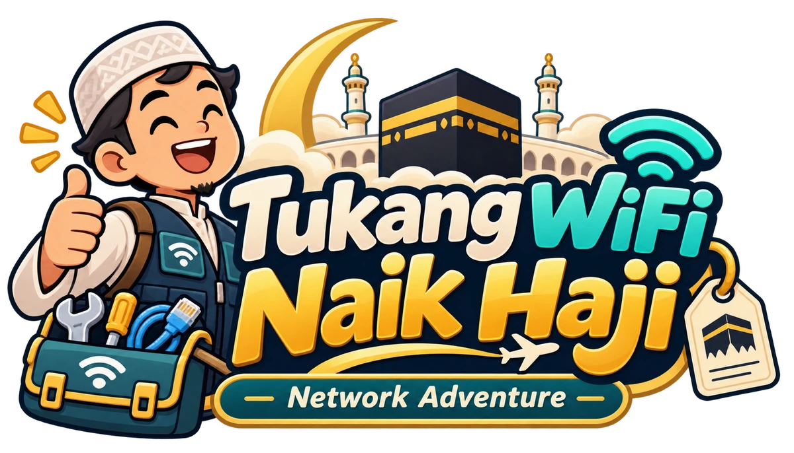

TAP / PANAH UNTUK BERGERAK
PETUALANGAN TEKNISI JARINGAN
Tukang WiFi Naik Haji

Bantu warga memperbaiki jaringan, kumpulkan upah, dan wujudkan impian perjalanan haji.
16 pekerjaan • 4 kawasan • Hasil belajar dapat diunduh